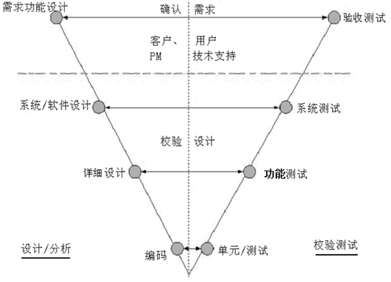
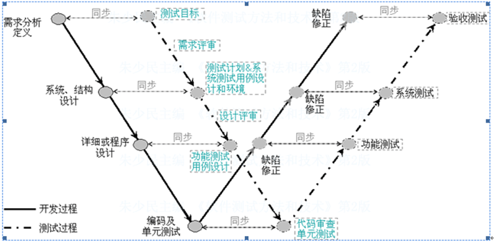
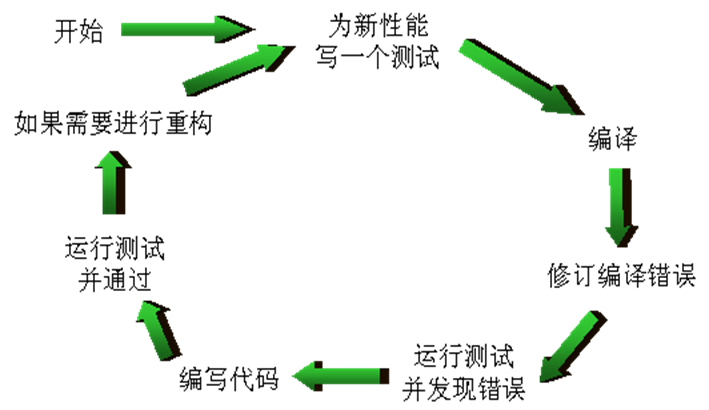
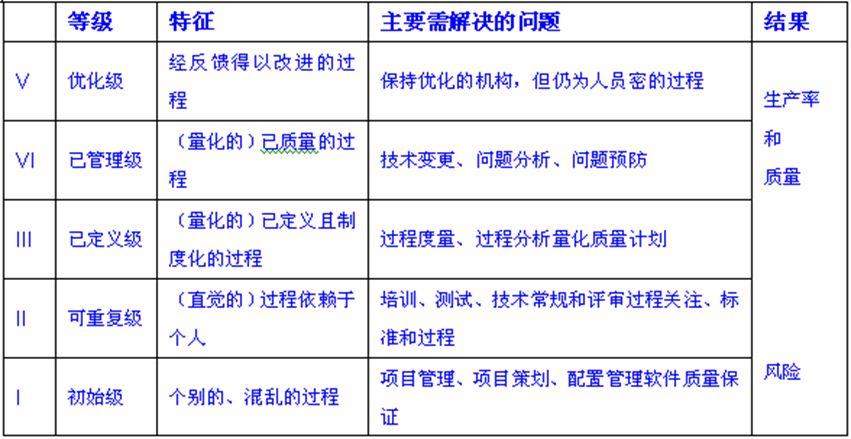
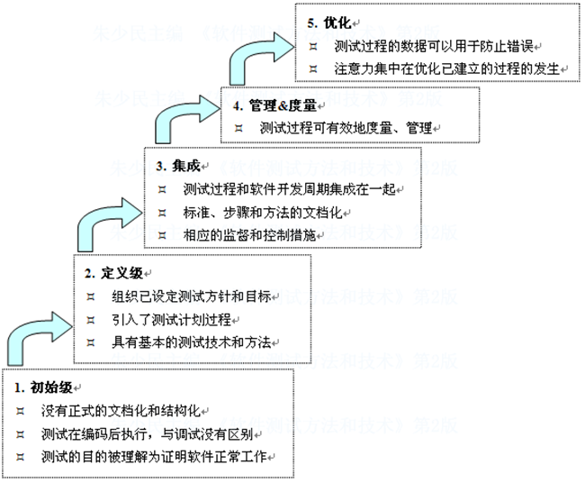
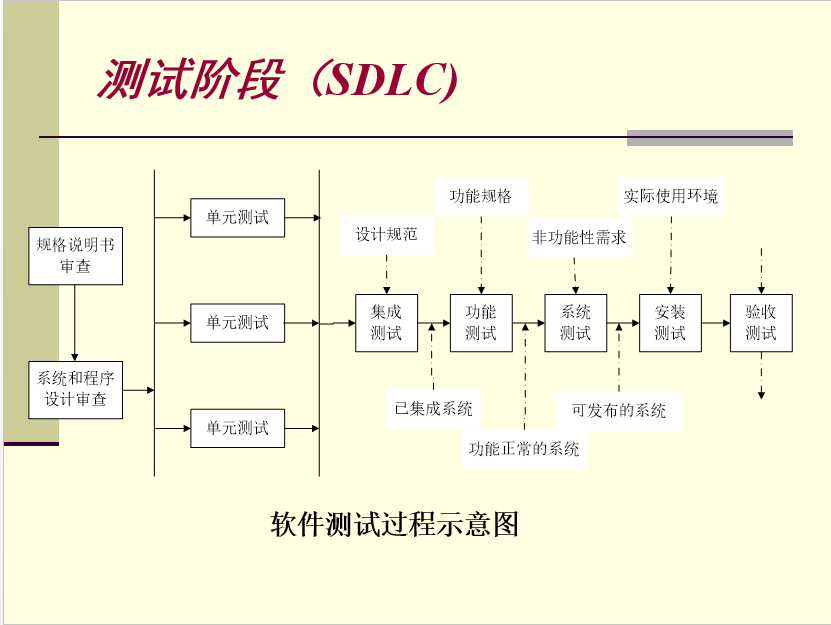
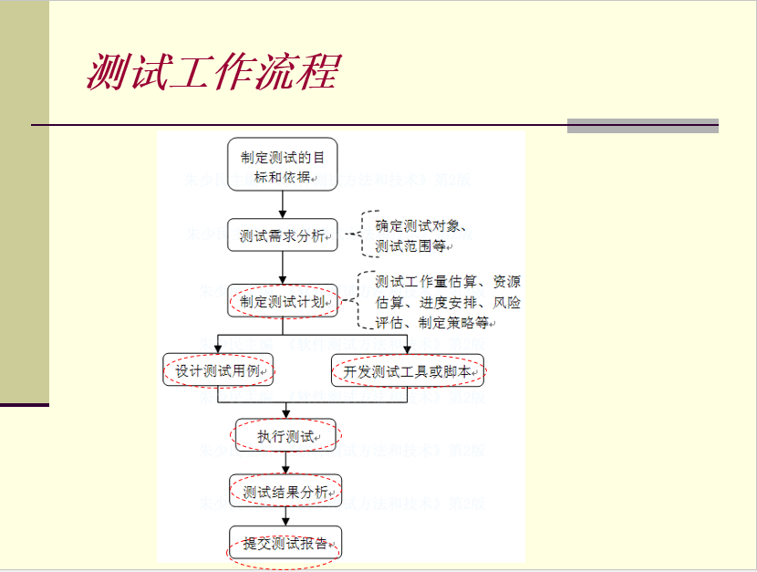

软件测试定义
1983 of IEEE Standard 729：
使用人工或自动手段来运行或者测试某个系统的过程
其目的在于检验它是否满足规定的需求或是弄清楚预期结果与实际结果之间的差别。
软件测试是验证和有效性确认构成的整体。
- “验证”是检验软件是否已正确地实现了产品规格书所定义的系统功能和特性
- “有效性确认”是确认所开发的软件是否满足用户真正需求的活动。
下面关于软件测试，描述正确的是？(
)
A．软件测试是使用人工操作或者软件自动运行的方式来检验它是否满足规定的需求或弄清预期结果与实际结果之间的差别的过程。
B．软件测试的测试目标是发现一些可以通过测试避免的开发风险。
C．软件测试的原则之一是测试应该尽早进行，最好在需求阶段就开始介入
D．软件测试主要工作内容是验证（verification）和确认（validation）
软件测试的对象
软件的含义:
软件 = 程序 + 数据 （库） + 文档 + 服务
- 能够完成预定功能和性能的、可执行的指令(计算机程序)；
- 使得程序能够适当地操作信息的数据结构；
- 描述程序的操作和使用的文档。
软件测试的对象包括 ()
A．目标程序和相关文档
B．源程序、目标程序、数据及相关文档
C．目标程序、操作系统和平台软件
D．源程序和目标程序
测试过程模型
V模型
V模型是瀑布模型的变种，体现开发与测试的关系

W模型
W模型更加强调开发与测试的同步进行

测试驱动开发

- 明确当前要完成的功能。可以记录成一个 TODO 列表。
- 快速完成针对此功能的测试用例编写。
- 测试代码编译通过。
- 编写对应的功能代码。
- 测试通过。
- 对代码进行重构，并保证测试通过。
- 循环完成所有功能的开发。
有关”测试驱动开发”，下列说法正确的有？(
)
A．TDD的原理是在开发功能代码之前，先编写单元测试用例代码，测试代码确定需要编写什么产品代码
B．TDD的基本思路就是通过测试来推动整个开发得进行，但测试驱动开发并不只是单纯的测试工作，而是把需求分析，设计，质量控制量化的过程。
C．TDD的重要目的不仅仅是测试软件，测试工作保证代码质量仅仅是其中一部分，而且是在开发过程中帮助客户和程序员去除模棱两可的需求。
D．TDD首先考虑使用需求（对象、功能、过程、接口等），主要是编写测试用例框架对功能的过程和接口进行设计，而测试框架可以持续进行验证。
H模型
Tmap模型
TMap (Test Management Approach，测试管理方法)是一种结构化的、基于风险策略的测试方法体系, 目的能更早地发现缺陷，以最小的成本、有效地、彻底地完成测试任务，以减少软件发布后的支持成本。
TMap所定义的测试生命周期由计划和控制、准备、说明、执行和完成等阶段组成
测试过程改进模型
软件能力成熟度模型CMM
CMM即软件能力成熟度模型（Capability Maturity Model）是向软件组织提供如何增加对其开发和维护软件过程的控制能力。设计并实施CMM是为了指导软件组织
通过关注一组有限的活动，并为实现它们而积极工作，组织能稳步地改善其软件过程，使其软件过程能力持续不断地增长。
CMM的五个等级及关键过程域
通过确定当前过程的成熟度等级和识别出对软件质量和过程改进至关重要的问题，来选择其过程改进策略。

软件能力成熟度模型 CMM ( Capability Maturity Model)
关于测试驱动开发，描述错误的是 (C)
A．测试驱动开发式是一种敏捷开发方法
B．TDD需求开发人员学习测试相关知识
C．测试驱动开发不适合使用CMM/CMMI方法
D．测试驱动开发可以和结对编程结合使用
TMM
过程能力描述了遵循一个软件测试过程可能达到的预期结果的范围。TMM的建立，得益于以下3点：
- 充分吸收、CMM的精华；
- 基于历史演化的测试过程；
- 业界的最佳实践。
TMM的5个级别简要描述
5个别级的一系列测试能力成熟度的定义，每个级别的组成包括到期目标、到期子目标活动、任务和职责等。

CTP
关键测试过程（Critical Test Process，CTP）
使用CTP的过程改进，始于对现有测试过程的评估，通过评估以识别过程的强弱，并结合组织的需要提供改进的意见
软件测试阶段

单元测试
单元测试的对象是程序系统中的最小单元–模块或组件上，在编码阶段进行，针对每个模块进行测试。
单元测试一般由编程人员和测试人员共同完成，而以开发人员为主。
- 目标：确保模块被正确地编码
- 依据：详细设计描述
- 过程：设计、脚本开发、执行、调试、分析结果
- 执行者：测试人员和开发人员
- 测试方法：白盒方法为主，辅以黑盒方法
- 评估：通过所有单元测试用例，代码没有严重缺陷
单元测试管理
单元测试文档
单元测试工具
单元测试技术
白盒测试
利用查看代码功能和实现方式得到的信息来确定哪些要测试，哪些不要测试，如何开展测试。
白盒测试针对的是程序内部逻辑和数据流程的测试，主要有逻辑驱动法和基本路径法。
逻辑覆盖法
以程序的内部逻辑结构为基础
语句覆盖
基本思想
设计若干测试用例，运行被测程序，使程序中的每个可执行语句至少被执行一次
- 顺序结构
让测试从头执行到尾 - 分支、条件和循环结构
利用执行的测试覆盖全部语句
它是最弱的逻辑覆盖准，效果有限，必须与其他方法交互使用。
判定覆盖
设计若干用例，运行被测程序，使得程序中每个判断的取真分支和取假分支至少经历一次，即判断真假值均曾被满足。
判定覆盖只比语句覆盖稍强一些，但实际效果表明，只是判定覆盖，还不能保证一定能查出在判断的条件中存在的错误。因此，还需要更强的逻辑覆盖准则去检验判断内部条件。
条件覆盖
设计若干测试用例，执行被测程序以后，要使每个判断中每个条件的可能取值至少满足一次。
条件覆盖深入到判定中的每个条件，但可能不能满足判定覆盖的要求。
判定－条件覆盖
设计足够的测试用例，使得判断条件中的所有条件可能取值至少执行一次，同时，所有判断的可能结果至少执行一次
判定－条件覆盖有缺陷。从表面上来看，它测试了所有条件的取值。但是事实并非如此。往往某些条件掩盖了另一些条件。会遗漏某些条件取值错误的情况。为彻底地检查所有条件的取值，需要将判定语句中给出的复合条件表达式进行分解，形成由多个基本判定嵌套的流程图。这样就可以有效地检查所有的条件是否正确了。
条件组合覆盖
设计足够的测试用例，使得判断中每个条件的所有可能至少出现一次，并且每个判断本身的判定结果也至少出现一次。
这是一种相当强的覆盖准则，可以有效地检查各种可能的条件取值的组合是否正确。它不但可覆盖所有条件的可能取值的组合，还可覆盖所有判断的可取分支，但可能有的路径会遗漏掉。测试还不完全。
路径覆盖
设计所有的测试用例，来覆盖程序中的所有可能的执行路径。
这是最强的覆盖准则。
基本路径法
在程序控制流程的基础上，分析控制构造的环路复杂性，导出基本可执行路径集合，从而设计测试用例。
- 使用详细设计或源代码，画出程序流程图；
- 计算程序流程图的环路复杂性V(G) ；
- V(G) = 区域数量(由节点、连线包围的区域，包括图形外部区域)
- V(G) = 连线数量 - 节点数量 + 2
- V(G) = 简单可预测节点数量 + 1
- 导出线性无关的基本程序路径集合；
- 为基本路径集合设置测试用例.
黑盒测试
主要用于功能测试阶段，也称黑盒测试为功能测试或数据驱动测试。检查系统功能是否按照需求规格说明书的规定正常使用、是否能适当接收输入数据输出正确的结果。
等价类划分法
等价类划分法是把所有可能的输入数据，即程序的输入域划分为若干部分（子集），然后从每一个子集中选取少数具有代表性的数据作为测试用例。
等价类是输入域的某个子集合，而所有等价类的并集就是整个输入域。因此，等价类对于测试有两个重要的意义：
完备性——整个输入域提供一种形式的完备性
无冗余性——若互不相交则可保证一种形式的无冗余性
等价类的分类：有效等价类和无效等价类。
设计测试用例时，要同时考虑这两种等价类。因为软件不仅要能接收合理的数据，也要能经受意外的考验。经过正反的测试才能确保软件具有更高的可靠性。
有效等价类
是指对软件规格说明而言，是有意义的、合理的输入数据所组成的集合。利用有效等价类，能够检验程序是否实现了规格说明中预先规定的功能和性能。
无效等价类
是指对软件规格说明而言，是无意义的、不合理的输入数据所构成的集合。利用无效等价类，可以鉴别程序异常处理的情况，检查被测对象的功能和性能的实现是否有不符合规格说明要求的地方。
如何划分？
先从程序的规格说明书中找出各个输入条件，再为每个输入条件划分两个或多个等价类，形成若干的互不相交的子集。
根据等价类创建测试用例的步骤
1、分析案例，建立等价类表，列出所有划分出的等价类：
| 条件 | 有效等价类 | 无效等价类 |
|---|---|---|
| … | … | … |
| … | … | … |
并为每个等价类规定一个唯一的编号。
2、设计一个新的测试用例，使它能够尽量覆盖尚未覆盖的有效等价类。重复这个步骤，直到所有的有效等价类均被测试用例所覆盖。
3、设计一个新的测试用例，使它仅覆盖一个尚未覆盖的无效等价类。重复这一步骤，直到所有的无效等价类均被测试用例所覆盖。
边界值分析法
程序的很多错误发生在输入或输出范围的边界上，因此针对各种边界情况设置测试用例，可以发现不少程序缺陷；
通常边界值分析法是作为对等价类划分法的补充。这种情况下，其测试用例来自等价类的边界。
设计方法
- 首先确定边界情况。通常输入或输出等价类的边界就是应该着重测试的边界情况。
- 选取正好等于、刚刚大于或刚刚小于边界的值作为测试数据，而不是选取等价类中的典型值或任意值。
判定表方法
等价类划分法和边界值法着重考虑输入条件，而忽略了输入条件的组合情况以及各种输入条件之间的相互制约关系。直接针对多种输入条件的组合，不需要考虑结果，即直接采用判定表方法。
判定表由“条件和活动”组成，条件是所有的条件组合，测试活动则考虑每一个选择；
涉及概念
- 条件桩（Condition Stub）：列出了问题得所有条件。通常认为列出的条件的次序无关紧要。
- 动作桩（Action Stub）：列出了问题规定可能采取的操作。这些操作的排列顺序没有约束。
- 条件项（Condition Entry）：列出针对它左列条件的取值。在所有可能情况下的真假值。
- 动作项（Action Entry）：列出在条件项的各种取值情况下应该采取的动作。
- 规则：任何一个条件组合的特定取值及其相应要执行的操作称为规则。在判定表中贯穿条件项和动作项的一列就是一条规则。显然,判定表中列出多少组条件取值,也就有多少条规则,既条件项和动作项有多少列。
基本步骤
- 列出所有的条件桩和动作桩；
- 确定规则的个数（假如有n个条件。每个条件有两个取值（0,1）,故有2n种规则）；
- 填入条件项；
- 填入动作项，制定初始判定表；
- 简化、合并相似规则或相同动作。
因果图法
如果在测试时必须考虑输入条件的各种组合，则可能的组合数目将是天文数字，因此必须考虑采用一种适合于描述多种条件的组合、相应产生多个动作的形式来进行测试用例的设计，这就需要利用因果图（逻辑模型）。
因果图法的定义：是一种利用图解法分析输入的各种组合情况，从而设计测试用例的方法，它适合于检查程序输入条件的各种组合情况。
多种输入条件的组合，产生多种结果设计测试用例。
设计步骤
- 分割功能说明书，识别“原因”和“结果”，并加以编号。
- 分析程序规格说明的描述中，哪些是原因，哪些是结果。原因常常是输入条件或是输入条件的等价类，而结果是输出条件。
- 根据原因与结果之间的关系画出因果图
- 标明约束条件
- 把因果图转换成判定表。
- 为判定表中每一列表示的情况设计测试用例。
正交试验法
- 当输入条件多，且每个条件不能以“是”或“否”来回答，测试组合会很多，工作量也很大。
- 利用因果图来设计测试用例时, 作为输入条件的原因与输出结果之间的因果关系,有时很难从软件需求 规格说明中得到。往往因果关系非常庞大,以至于据此因果图而得到的测试用例数目多的惊人，给软件测试 带来沉重的负担，
功能图法
错误推测法
测试场景法
集成测试
集成测试，也称组装测试、联合测试、子系统测试，在单元测试的基础上，将模块按照设计要求组装起来同时进行测试，主要目标是发现与接口有关的模块之间的问题。
两种集成方式：一次性集成方式和增殖式集成方式。
一次性集成方式
增殖式集成方式
系统测试
系统测试是将软件放在整个计算机环境下，包括软硬件平台、某些支持软件、数据和人员等，在实际运行环境下进行一系列的测试，包括恢复测试、安全测试、强度测试和性能测试等
验收测试
验收测试的目的是向未来的用户表明系统能够像预定要求那样工作，验证软件的功能和性能如同用户所合理期待的那样
